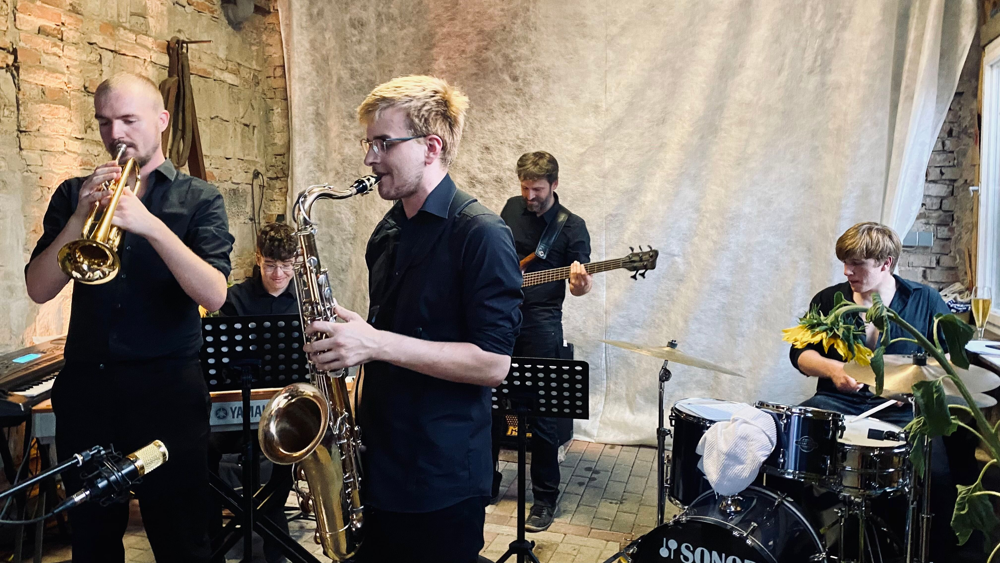

Die Band
„FluJam“ - das sind wir, eine sechsköpfige Gruppe junger Hobbymusiker*innen aus dem Oderbruch.
Anfänglich kommen wir aus dem Jazz, doch mit der Zeit haben wir uns auf Pop, Funk und Soul
spezialisiert und stellen unser Talent mittlerweile mit regelmäßigen Auftritten unter Beweis.
Musik ist unsere Leidenschaft, weshalb wir uns im April 2022 dazu entschieden haben „FluJam“ zu gründen. Die Band
bindet jedes Talent ganz individuell mit ins Gesamtbild, sodass am Ende gute Unterhaltung
und eine zufriedene Zuschauerschaft herausspringen. Doch was motviert uns, jeden Tag Zeit
in dieses aufwendige Projekt zu investieren? Für uns ist es viel mehr, als die bloße Leidenschaft
zur Musik. Wir knüpfen neue- und vertiefen bestehende soziale Kontakte unter uns, aber auch mit
anderen Musiker*innen und Interessierten.
Bildung ist ein weiterer wesentlicher Faktor dieses
Projekts. Durch Auftritte, Proben, Organisation und Vermarktung der Band werden wir immer
erfahrener in diesem vielumfassenden Bereich. Zuletzt möchten wir anführen, dass wir unabhängiger
denn je sind. Wir entscheiden selbst über die Zukunft unserer Gruppe und welche Projekte wir zusammen
umsetzen möchten.
Für uns ist es ein erstrebenswerter Gewinn, unsere Leidenschaft zusammen auszuüben und gegenbenenfalls
in Zukunft in eine Berufung zu verwandeln.
Noch nicht von uns überzeugt? Dann kommen Sie doch mal Live vorbei!
17.06.2023 15 Uhr - Dorffest 16259 Mädewitz, Oderaue
24.06.2023 14 Uhr - Oderbruchfestival 15324 Letschin
24.06.2023 19 Uhr - Dorffest 16259 Wollenberg
Klicken Sie hier, um unsere Setlist zu sehen!
99 Luftballons – Nena
Back To Black – Amy Winehouse
Crazy – Gnarls Barkley
Dancing in the Moonlight - Toploader
Feel It Still – Portugal. The Man
Fields Of Gold – Sting
Forget You – CeeLo Green
Grace Kelly - MIKA
I Will Survive – Gloria Gaynor
Isn´t She Lovely – Stevie Wonder
Man in the Mirror – Michael Jackson
Nur ein Wort – Wir sind Helden
Our House - Madness
Part-Time Lover – Stevie Wonder
Respect – Aretha Franklin
Showgeschäft – Jan Delay
Son Of A Preacher Man – Dusty Springfield
Summer Of ´69 – Bryan Adams
Sunny – Footprint Projects
Sway – Michael Bublé
That´s What I Like – Bruno Mars
The Chicken – Jaco Pastorius
Time After Time – Cyndi Lauper
Treasure – Bruno Mars
Valerie – Amy Winehouse
Walking On Sunshine – Katrina & The Waves
Kontakt
Noch keine Band für die nächste Veranstaltung? Dann buchen Sie uns!Egal ob Hochzeit, Geburtstag oder Events jeglicher anderer Art - kontaktieren Sie uns einfach über:
E-Mail: FluJam@web.de
Telefon: 015901344706
oder Instagram unter "@flujam_"
Galerie
